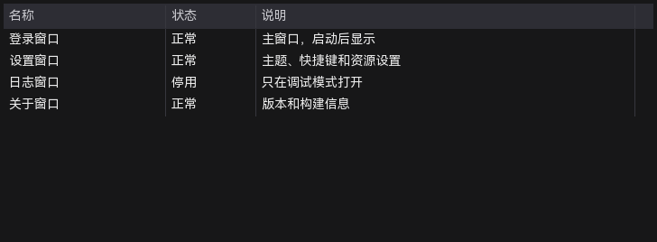
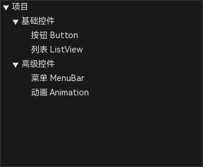

15 列表、树与选择控件
这类控件的数据量通常大于普通输入控件，重点不是逐个摆放，而是维护 items、columns、rows 等结构化数据。属性面板提供行式编辑器；数据很多时可用原始 JSON 批量修改。
15.1 下拉框 ComboBox
| 项目 | 说明 |
|---|---|
| 典型用途 | 从固定候选集中选择一个值 |
| items 格式 | 一行一项；空行忽略。需要值和显示文本不同时，以属性面板/schema 的字段为准 |
| 常用属性 | items、selected-index、可编辑、字体和颜色 |
| 常用事件 | 选择变化；实际事件名以事件页签为准 |
- 放置 ComboBox，先调整尺寸，确保展开列表不会被父容器裁掉。
- 在属性面板的 items 行填写选项，一行一个。
- 设置默认 selected-index；不需要默认项时留空或设为 -1。
- 在预览中展开列表，确认文字宽度、行高和滚动行为。
例如“状态”下拉框的 items：
待办
进行中
已完成这三项对应的索引依次是 0、1、2；selected-index 设为 1 时初始选中“进行中”。
ComboBox 的下拉列表是浮层，父 Panel 若设置了裁剪，可能影响显示位置或可见区域；优先放在未被裁剪的层级。
15.2 列表 ListView

图 15-1 ListView 示例：三列（名称/状态/说明）和四行数据
ListView 的数据由两个独立的结构化字段组成：columns 定义列，rows 定义行。先写 columns，再写 rows；列数改变后要重新检查每一行的单元格数量。
15.2.1 在 Designer 中编辑
- 放置 ListView，调整控件尺寸，给列头和行留出足够的可视区域。
- 选中 ListView，在右侧属性面板向下滚动，找到
columns和rows两个行式编辑框。 - 先编辑 columns：一行一列；填写标题和宽度，需要颜色/字体时再追加属性。
- 编辑 rows：一行一条记录；单元格之间用
|分隔，单元格内容和可选样式之间用@分隔。 - 失焦/提交后画布立即重放列和行；按 F5 预览检查滚动、选中和编辑效果。
15.2.2 每列怎么定义
columns 的行格式为：
标题@宽度@背景色@文字色@字号@字体名@阴影色@阴影偏移X@阴影偏移Y| 字段 | 是否必填 | 说明 |
|---|---|---|
| 标题 | 必填 | 列头显示文字 |
| 宽度 | 可选 | 数字，缺省 100；小于 20 按 20 处理 |
| 背景色 | 可选 | 列头背景，#RRGGBB 或 #RRGGBBAA |
| 文字色 | 可选 | 列头文字颜色 |
| 字号 | 可选 | 列头字号；0 或省略表示继承控件字号 |
| 字体名 | 可选 | 引擎支持的字体 token，例如 muyao-softbrush |
| 阴影色 | 可选 | 列头文字阴影颜色；不需要阴影时省略 |
| 阴影偏移 X/Y | 可选 | 跟随阴影色使用，缺省为 1/1 |
最简三列示例（只定义标题和宽度）：
名称@180
状态@100
说明@380带列头样式的示例（背景色、文字色、字号）：
名称@180@#1F3A5FFF@#FFFFFFFF@18
状态@100@#1F3A5FFF@#FFFFFFFF@18
说明@380@#1F3A5FFF@#FFFFFFFF@18属性字段按上面的顺序解析；只填到“字号”时可以省略后面的字体/阴影字段。空字段表示跳过该位置，不要用空格代替颜色或数字。
15.2.3 每行怎么定义
rows 的行格式为：
单元格1|单元格2|单元格3
单元格1@背景色@文字色@字号@字体名|单元格2|单元格3规则：
- 一行一条记录；空行忽略。
- 单元格之间用
|分隔；建议单元格数量与 columns 列数一致。 - 每个单元格先写内容，再用
@追加可选样式；样式顺序为背景色 → 文字色 → 字号 → 字体名 → 阴影色 → 阴影偏移 X/Y。 - 单元格悬停背景色使用
hb#RRGGBBAA，例如正常@hb#335577FF。 - 内容中需要出现
|、@或反斜杠时，用反斜杠转义，例如路径\@home、甲\|乙。 - Designer 会为每行生成
row_0、row_1等内部 ID；行 ID 一般不需要在行式文本中手写。
最简四行示例：
登录窗口|正常|主窗口，启动后显示
设置窗口|正常|主题、快捷键和资源设置
日志窗口|停用|只在调试模式打开
关于窗口|正常|版本和构建信息带单元格样式的示例：
登录窗口@#223344FF@#FFFFFFFF@16|正常@hb#335577FF|主窗口，启动后显示
设置窗口|正常|主题、快捷键和资源设置
日志窗口@#443333FF|停用@#FFFF00FF|只在调试模式打开
关于窗口|正常|版本和构建信息15.2.4 列和行的对应关系
| columns | rows 中的一行 | 结果 |
|---|---|---|
| 名称、状态、说明（3 列） | 登录窗口|正常|主窗口 | 三个单元格依次填入三列 |
| 3 列 | 登录窗口|正常 | 缺少的“说明”单元格为空 |
| 3 列 | 登录窗口|正常|主窗口|额外 | 多出的单元格不应依赖；请保持与列数一致 |
修改 columns 后，已有行会按新列数重放。增加/删除列后请重新检查所有 rows，避免列错位或内容被截断。大量数据建议先用外部表格整理成 rows 文本，再粘贴到属性面板。
15.2.5 事件与预览
- 在事件页签选择 ListView 的实际事件：选择变化、单元格开始/完成编辑、列排序、行点击等。
- 需要单元格编辑时，确认控件的“单元格编辑”开关已启用，并在预览中双击单元格测试。
- 事件 handler 中读取行/列索引或单元格文本，再更新业务状态；具体 API 参考 读写控件数据。
15.3 树 TreeView

图 15-2 TreeView 示例：两层分组、叶子节点和展开/折叠状态
TreeView 的 items 使用缩进式文本描述层级。行首每多一个 >，节点就深一层；节点属性和 ListView 的单元格一样，用 @ 追加。
15.3.1 在 Designer 中编辑
- 放置 TreeView，在属性面板找到
items行式编辑框。 - 按“根节点 → 子节点 → 孙节点”的顺序逐行填写，每行开头用
>表示层级。 - 需要节点颜色、字号或字体时，在节点文本后追加
@属性。 - 设置默认展开、行高和是否允许节点编辑。
- 在事件页签绑定选择/展开/编辑事件，并在预览中逐节点检查。
15.3.2 items 行格式
项目
>基础控件
>>按钮 Button
>>列表 ListView
>高级控件
>>菜单 MenuBar| 部分 | 说明 |
|---|---|
行首 > | 层级标记；一个 > 一层，可连续写多个 |
| 节点标签 | 显示文字；行首空格会保留 |
@属性 | 可选节点样式，顺序：背景色 → 文字色 → 字号 → 字体名 → 阴影色 → 阴影偏移 X/Y |
| 节点 ID | Designer 自动生成 tn_1、tn_2……，行式文本不需要手写 |
| 展开状态 | 由控件默认展开/展开全部属性控制；节点自己的展开状态由运行时交互决定 |
带节点颜色的示例：
项目@#223344FF@#FFFFFFFF@16
>基础控件@#2B3D55FF@#E8F0FFFF
>>按钮 Button
>>列表 ListView
>高级控件@#2B3D55FF@#E8F0FFFF
>>菜单 MenuBar节点文字本身以
> 开头时，需要写成 \>；文字中的 @ 和反斜杠也要用反斜杠转义。15.3.3 层级与父子关系
| 上一行 | 下一行 | 结果 |
|---|---|---|
项目 | >基础控件 | “基础控件”是“项目”的子节点 |
>基础控件 | >>按钮 Button | “按钮 Button”是“基础控件”的子节点 |
>>按钮 Button | >高级控件 | 回到上一层，“高级控件”与“基础控件”同级 |
编辑时要保证父节点出现在子节点之前；Designer 会按行顺序构建父子关系，无法把节点挂到后面才出现的父节点上。
15.3.4 常用属性与事件
| 项目 | 说明 |
|---|---|
| items | 节点层级文本，见上 |
| row-height | 节点行高 |
| default-expand | 打开工程时是否默认展开根节点 |
| label-editing | 是否允许在运行时编辑节点文字 |
| 选择事件 | 选中节点变化时触发；handler 中按节点 ID/标签区分 |
| 展开/折叠事件 | 节点展开状态变化时触发 |
| 节点编辑完成 | 编辑节点文字提交时触发；只有启用编辑时才有意义 |
15.3.5 常见问题
| 现象 | 检查 |
|---|---|
| 层级全平 | 行首是否真的写了 >，而不是用空格模拟 |
| 节点跑到错误父级 | 上一行的 > 数量和节点顺序 |
| 节点样式不生效 | 属性字段顺序、颜色格式和字体名是否受引擎支持 |
| 编辑后事件丢失 | 改变节点数量/顺序后重新检查事件绑定，事件路径可能随索引变化 |
15.4 批量数据与原始 JSON
- 行式编辑器适合几十条以内的数据；大量数据优先用外部工具生成后粘贴。
- 原始 JSON 可编辑 items/columns/rows 的完整结构，但不会替你校验业务字段。
- 修改列数后要同步检查所有 rows 的单元格数量。
- 数据中的颜色、字体名和资源路径要使用当前工程可解析的格式。
15.5 常见问题
| 现象 | 检查 |
|---|---|
| ComboBox 展开后被裁掉 | 父容器裁剪、层级和可用空间 |
| ListView 列错位 | columns 数量、宽度与 rows 的单元格分隔符 |
| TreeView 层级不对 | 行首 > 的数量；不要用空格模拟层级 |
| 数据修改后预览无变化 | 是否提交了结构化编辑、是否在预览中重新加载工程 |